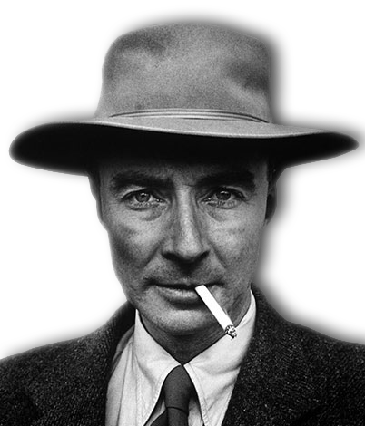
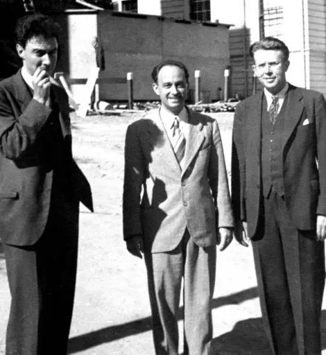
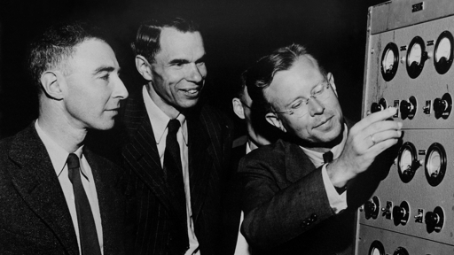
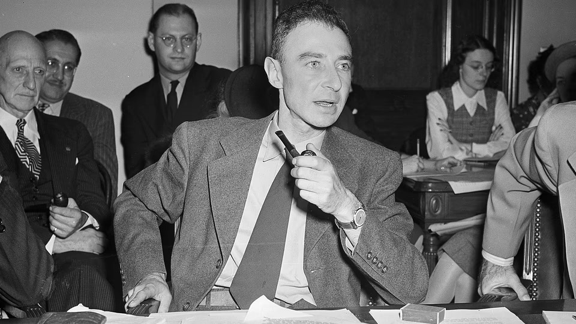
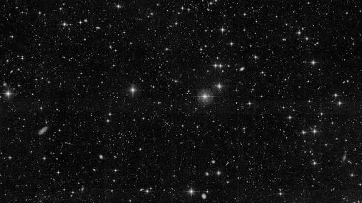
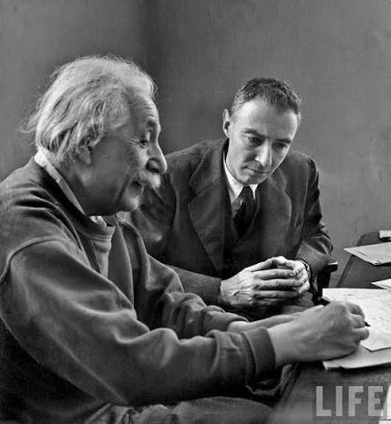
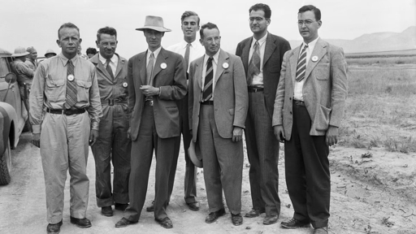
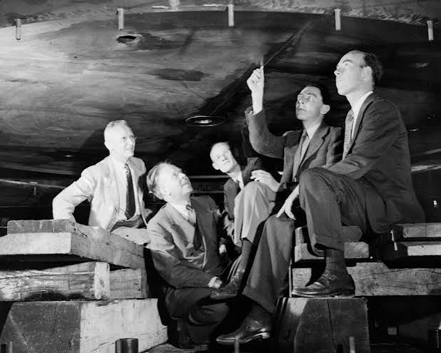
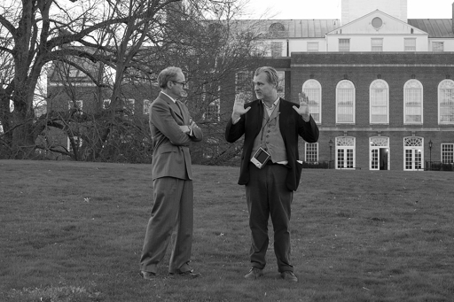

Ph.D. in Physics
Studied theoretical physics under Max Born; developed the Born–Oppenheimer approximation and completed his doctoral thesis on quantum theory of molecules.
Graduate Research in Experimental Physics
Conducted laboratory work under J.J. Thomson; realized his strengths lay in theoretical rather than experimental physics.
A.B. in Chemistry (switched to Physics), summa cum laude
Completed undergraduate studies in three years; took advanced physics courses as an undergraduate and studied literature, languages, and philosophy.

Julius Robert Oppenheimer was an American theoretical physicist, widely known as the "father of the atomic bomb" for his role directing the Manhattan Project during World War II. His work reshaped nuclear physics and left a lasting mark on science, policy, and the modern world.







